Never run a prompter before? Start here: what an operator does, and how to do it with Cadence Prompt.
These are the scripts you read on the prompter inside Cadence Prompt, shown as a page. In the app you press Play, read, and try each Your turn as you go. Practice is optional.
If you’ve never run a teleprompter before, you’re in the right place.
This series is going to teach you the craft of the job first, and the software right alongside it.
Whenever you see YOUR TURN, go ahead and pause to try it out for yourself.
Practice is completely optional, and everything in here is yours to come back to and try again as many times as you need.
Getting Started
The job
Your ultimate goal as a teleprompter operator is simple: to be completely invisible.
When you do your job well, the audience shouldn’t even realize there’s a script— they just see a confident, natural presenter connecting with the room.
To make that happen, you aren’t just scrolling words across a screen; you’re matching the speaker’s exact rhythm, breathing with them, and anticipating every pause, laugh, or unscripted detour.
Above all, your job is to take the pressure off the talent, giving them the freedom to focus entirely on their delivery while you seamlessly handle the pace.
From your seat behind the console, it’s a game of intense, active listening.
Your hand is resting lightly on the controller, and your eyes are locked on the screen, keeping the speaker’s exact word right in their comfortable reading zone— usually that top third of the glass.
You aren’t reading the script for yourself; you’re riding their cadence in real time.
If they pick up speed, you smoothly lean into the scroll.
If they go off-script to crack a joke or tell a quick story, you freeze the text, stay completely calm, and listen for the exact cue that tells you they’re ready to jump back in.
It’s a silent dance where the presenter leads, and you follow so closely that the whole thing feels effortless.
The room
On your screen, you’re seeing exactly the same words, plus everything the presenter should never have to see— your cursor, your cue notes, and all the tools keeping the show on track.
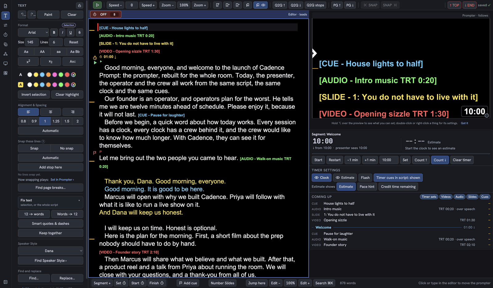
And remember, you aren’t out there alone.
Behind you is an entire crew: a producer, a stage manager, cameras, audio, graphics, and more.
Every single one of them is working off that same script, and you are the one holding it.
Throughout a show, the crew is going to lean on you for two things: how much time is left, and what’s coming up next.
Cadence is built so you can give them an exact answer, without ever having to guess.
Words you will hear
Before we dive in, let’s get four quick terms on the board.
First, the reading line— that’s the exact spot where the presenter’s eyes naturally rest, and this marker shows you right where it is.
Next, a cue is a mark you drop into the script to keep the crew in sync:
CUE
SLIDE
VIDEO
AUDIO
Custom
A bookmark is simply a spot you flag in the script so you can hop right back to it in a second.
And finally, a runlist puts multiple scripts in order, so your whole show flows seamlessly from one into the next.
What this series gives you
We’re going to break this whole thing down into ten short modules.
You’ll learn how to scroll smoothly, how to follow a speaker’s pace, how to mark up text, load a script, and make changes on the fly.
We’ll cover setting up your displays, working with cues, and managing the clock.
We’ll also walk through how to get ready before doors open— and what to do when something inevitably goes wrong.
When you finish, you can move straight on to Prep Like a Pro.
And by then, this job is going to feel like it’s yours.
When you’re ready, press to jump into the next module.
Don’t have a deck plugged in?
Just hit ⌘⌥] (Ctrl+Alt+]), or click the Next button inside the Runlist drawer.
Module 2
Your first scroll
About 7-8 minutes
Start
Alright, let’s get these words moving.
Go ahead and hit the Play button on the live bar right above the script—press it once to start scrolling, and press it again to stop.
If you’re using a Stream Deck, it’s this key right here:
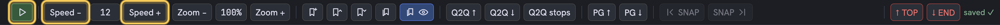
No deck plugged in?
No problem—just hit F2 to do exactly the same thing.
If you’re on a Mac laptop, remember to hold down the fn key.
Your turn Start me, stop me, start me again
Speed
Now let’s talk speed.
You can control it with the Speed dial, or with the plus and minus buttons on screen.
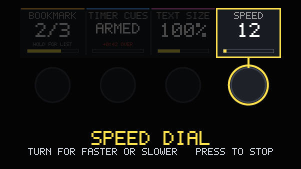
Turn the Speed dial to the right, and I’ll pick up the pace.
Turn it to the left, and I’ll slow right back down.
Need to freeze?
Just press the dial straight in, and I’ll stop on a dime.
No dial?
F4 speeds me up, and F3 slows me down.
Ramp and reverse
There are two quick things to keep in mind here.
First, when you adjust the speed, I’ll smoothly ramp to that new pace and hold it there.
Second, if you turn the dial back past zero, I’ll start running in reverse—which is exactly how you’ll back up a few lines whenever a presenter decides to repeat themselves.
Your turn Crawl. Sprint. Stop. Go backward a few lines. Settle on a speed that feels like talking
Ignore the rest
A Stream Deck has a lot of buttons, and it’s easy to get distracted.
For today, you only need three things: Play, the Speed dial, and your Zoom controls.
Everything else can wait.
I know you’re going to be tempted to press every button on that deck.
Honestly?
Go for it.
Nothing you press right now can hurt a show you aren’t running yet.
Text size
Remember, your presenter is standing across the room—so you always want to size the words for their eyes, not yours.
You’ll find Zoom right on the top bar: those Zoom minus and Zoom plus buttons sitting on either side of the percentage.
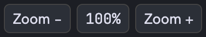
If you’re on a deck, reach for the Text size dial.
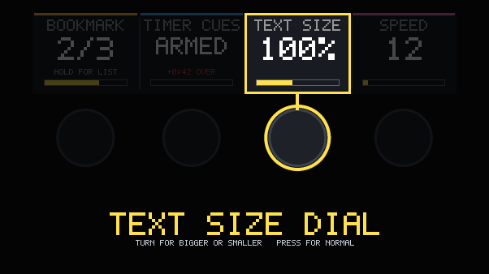
Turn it right to make the text bigger, left to make it smaller, and press it straight in to snap everything right back to normal.
No dial?
F6 makes the text bigger, and F5 makes it smaller.
Your turn Make me too big, then too small, then just right
The wheel
There’s one more speed control built in, and you already have it right in front of you.
While I’m playing, just roll your mouse wheel—or use a two-finger scroll on your trackpad.
I’ll speed up, slow down, and ramp exactly the same way.
Keep that one in your back pocket.
You’re going to be really glad you know it on the day a cable decides to let you down.
Top and End
Whenever you need to jump back to the very beginning, hit Top.
You’ll see Top and End highlighted in red at the far end of the live bar.
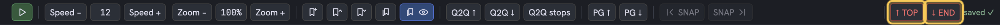
While I’m actively playing, those buttons take two presses.
The first press only moves your editor view; the second press actually moves the presenter’s screen.
That’s built in on purpose—because nobody should ever jump a presenter to the top of a script by accident.
No deck?
F9 takes you to the Top.
Your turn Press Top twice. You are back where this module began
When you’re ready, press to jump into the next module.
Module 3
Following the presenter
About 6-7 minutes
The one rule
Here’s the golden rule of this job: follow the presenter—never lead them.
The words should only move when they speak, never a beat before.
Here’s how that works in practice.
You want the last word they say to pass right across the reading line at the exact moment they say it—not early, and not late.
That reading line is where their eyes naturally rest, and this marker at the edge of the screen shows you right where it sits.
If you run early, they’ll feel like they have to race to keep up.
If you run late, they’ll stall out and start hunting for their place.
Neither one looks like a natural person talking to a room.
Where to look
You’ve got two places to keep your focus, and the presenter always comes first.
Listen closely to them, and track right where they are in the sentence.
Your own screen comes second—it’s there to show you what the presenter sees, just so you know the words are sitting right where they belong.
Glance at it, don’t stare.
The more you stare at the screen, the less you’re actually hearing the speaker.
Your turn Read the next three lines aloud at your own pace. Pretend you are the presenter. Then set a speed that follows you
Good evening, and thank you for coming.
Tonight we are going to talk about something that matters to every one of us.
Let me begin with a story.
Ramp, then hold
You aren’t pushing the page forward with every single button press—you set a speed, and the page holds it for you.
When the presenter picks up the pace, gently nudge the speed up.
When they slow down, nudge it back.
Make small adjustments early, and they’ll never even notice you’re there.
Make big adjustments late, and they’ll notice everything.
If you dial the speed all the way down to zero, I’ll stay right where I am while remaining in play—which is the exact move you’ll use to hold for an applause line.
Your turn Set a speed. Nudge it up two clicks. Nudge it down two. Take it to zero. Start again
When they stop
Presenters are going to pause.
They’ll wait for a laugh, take a breath, or turn to look at a slide—and you stop right there with them.
Hit Pause, or dial the speed down to zero, and start moving again the second they do.
Never chase them.
If they slow down, just let the text wait patiently for them to catch up.
Reading back
And every now and then, a presenter will repeat a line or lose their place.
Just turn the speed past zero, and the words will smoothly run in reverse.
Back up a line or two, then roll right back forward at their pace.
Backing up a little is easy; backing up a lot calls for a bookmark, which we’ll get into later in this series.
Your turn Go forward ten lines, then back five, then forward again
When you’re ready, press for the next module.
Module 4
Why we space and mark the words
About 5-6 minutes
The goal
Here’s the real reason a prompter script looks the way it does— we aren’t just decorating the page.
We’re shaping the words so the presenter can read them without ever sounding like they’re reading.
Every single line break, color, and mark has a specific job: to help them breathe, pause, and land every thought the right way.
Spread it out
A big paragraph on a teleprompter is just a wall of text.
When a presenter hits a wall of words, they lose their place and their voice goes completely flat.
So instead, we put each sentence on its own line.
We break after a clause— right where a real person would naturally take a breath— and we leave a clean gap whenever a new thought begins.
Try reading this next part out loud twice: once as a solid wall, and once spread out.
The committee met on Tuesday, reviewed the numbers, agreed that the quarter had gone well, and asked that the plan for the next quarter be ready by Friday.
The committee met on Tuesday, reviewed the numbers, agreed the quarter had gone well, and asked that the plan for next quarter be ready by Friday.
Your turn Read both versions aloud. Which one is easier to say well?
Where the breaks go
Here are suggestions for where to break.
Break at the end of a sentence, and break at a comma that separates parts of a thought.
Break after a colon, a semicolon, or an ellipsis.
When you hit a list, put one item on each line.
And just as important— know where not to break.
Never split a name in half, or separate a number from its unit.
“Ten percent” stays together on one line, and “Dr. Smith” stays together too.
Cadence can handle most of this formatting for you automatically, as you’ll see later in the series—but knowing why it’s done this way lets you double-check its work.
Marks that mean something
Now let’s talk about marking up the text.
Color tells the presenter who’s speaking, or flags a line that isn’t meant to be read aloud.
Bold or underline tells them to lean into a word, and a highlight simply says, “this one matters.”
Just pick a few marks and use them exactly the same way every single time—because visual cues only help if they mean one consistent thing.
Remember: if everything is bold, nothing is.
To highlight, just select your words and click a color under Background in the Text drawer—
and that highlight will show up right on the prompter too.
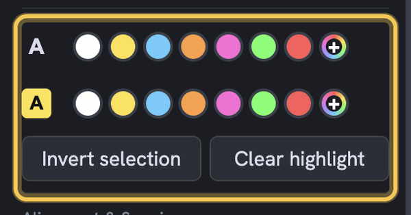
Invert selection flips the words to black on white, and clicking it again puts them right back.
Clear highlight wipes the color clean.
Your turn Highlight this line, then clear the highlight
Names and hard words
One last thing: if a word is tricky to pronounce, the presenter is either going to stumble over it or stop dead in their tracks to think.
Cadence can display a respelling right beside the word— you’ll find that under Prepare, then Pronunciations… which we’ll dive into later in this series.
When you’re ready, press to jump into the next module.
Module 5
Getting your script in
About 3-4 minutes
The usual way
Most scripts are going to land in your inbox as a Word document.
Half the time, the presenter wrote it themselves— and three other people have already left their fingerprints on it.
The first thing most operators try is a simple copy and paste.
And honestly?
That works just fine.
Paste
Copy the text out of Word, click into the editor right where you want it, and hit paste.
The words drop straight in, and Cadence automatically lays them out as a clean prompter script.
All of Word’s extra fonts and colors get left behind—unless you specifically choose to paste with source formatting.
Trust me, most of the time you don’t want any of that old formatting coming along for the ride.
Your prompter wants one clean, consistent look from top to bottom.
Your turn Copy a few lines from anywhere and paste them at the end of this script
Open a file
When you want to bring in a whole file at once, open the Prepare drawer
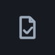
and click Import & Prep…
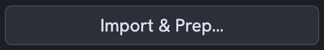
or just hit ⇧⌘I (Ctrl+Shift+I).
It reads Word docs, PowerPoint presenter notes, PDFs, and more.
It opens right up as a file in the Prepare tab, beside your script, and it can clean up the entire script in one pass— which we’ll dive into in the next series.
Best of all, your original file stays completely untouched.
Cadence hands you a fresh working copy, ready to edit.
Nothing in your current script gets overwritten.
Good habit to build on day one: never edit the client’s original file.
Always work off your own copy.
Then what
Keep in mind, a freshly pasted script is completely raw.
It’s probably packed with dense paragraphs, speaker names buried in the middle of lines, and production notes that were never meant for the presenter’s eyes.
Turning that raw document into something readable is what we call prep— and on a real show, it can easily take more than half your time.
Cadence has built-in tools to handle most of that heavy lifting for you, and we’ll walk through all of them in the next series, Prep Like a Pro.
For now, you can make any quick tweaks you need right by hand.
When you’re ready, press to jump into the next module.
Module 6
Edit on the fly
About 4-5 minutes
No edit mode
In Cadence, there’s no separate “edit mode” to toggle in and out of.
You can click anywhere and start typing— even while I’m actively scrolling.
A last-minute change is literally just typing.
And trust me, that matters.
Scripts change on show day all the time—and sometimes right in the middle of the show.
Below the line
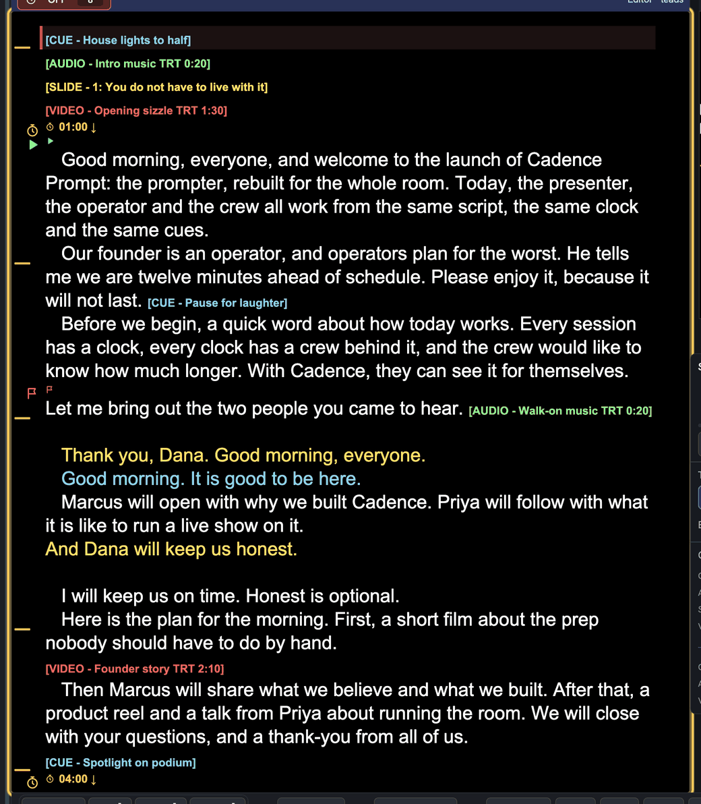
Here’s the one rule to keep in mind: make your edits below the reading line in the editor area, and I won’t jump at all.
The presenter will simply see the updated words when we scroll there.
If you edit above the line, you’re changing words they’ve already read— so don’t do that.
Your turn Press Play. Click on a line below the marker and change one word while I scroll
Jump here
Sometimes, though, you do need to take the presenter straight to a specific spot.
Just click on that line, and press Jump here.
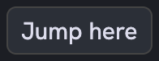
On a Stream Deck, it’s this key right here:
The prompter snaps straight to your cursor.
No Stream Deck?
You’ll find Jump here in the Play menu,
or just hit ⌘⌥Enter (Ctrl+Alt+Enter) to do exactly the same thing.
Your turn Click on a line near the end of this module, then press Jump here
Clients like to watch
When a presenter is workshopping a line, they like to watch it change.
You can zoom your editor or prompter display out to see the whole paragraph, make the tweak, and zoom right back in.
Editor zoom only changes your screen— the text the presenter sees doesn’t move an inch.
Zoom in the prompter display only affects the presenter’s screen, not your edit window.
Remember, the Zoom buttons on the top bar are for the prompter; your editor’s zoom is ⌘− and ⌘+ (Ctrl+− and Ctrl++).
There are also Stream Deck buttons for both zooms
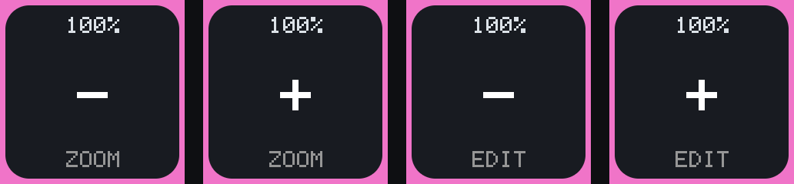
and a rotary knob for each
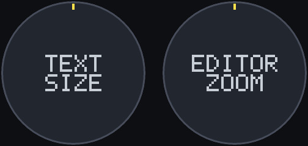
.
The changes you cannot see
Now, what happens when a client sends over a brand-new version of the entire script?
You have to track down every single change, and you can’t afford to miss one.
Cadence has dedicated tools for this— which we’ll cover in the next series— that show you exactly what the client changed, what you changed, and where you both made edits.
Until then, live by this rule: never paste over a script without keeping a copy first.
When you’re ready, press for the next module.
Module 7
Your display and rig
About 6-7 minutes
Two pictures
Depending on your rig, your screen and the presenter’s glass can show exactly the same picture, or two completely different ones.
Open up the Show drawer and take a look at Display mode— click it, and the drawer opens with that control lit right up.
Mirrored mode gives you one picture across two screens— or just a single screen.
Hit the View key, and this window flips full-screen into the prompter; hit it again, and you’re right back in your editor.
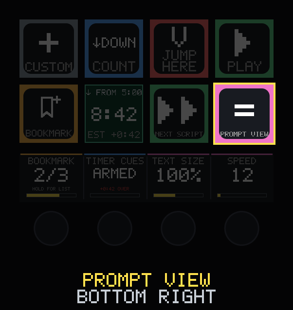
Extended mode gives you two separate pictures, so that second screen is already dedicated to the prompter.
And if you’d rather not think about it, Auto picks the right mode for you.
No Stream Deck?
F1 is your View key.
Your turn Press View, look around, press it again. Esc also brings you back
The glass
Because prompter glass reflects a monitor, a mirror in the optical path can flip the words backward.
Head into the Show drawer under Output: Mirror flips the image left to right, and Flip turns it upside down.
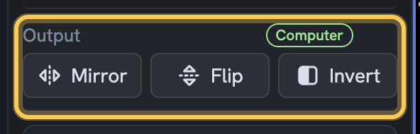
Those only affect the presenter’s screen— your editor stays right-side up and completely readable.
Just remember, the prompter view is read-only while it’s mirrored or flipped, so always do your typing in the editor.
If the words are showing up backward on the glass, Mirror is what you’re looking for.
Make sure you check it before the presenter walks up and checks it for you.
Your turn Turn Mirror on, look at the prompter, then turn it off
Invert
Every now and then, most frequently when prompting in full sunlight, dark text on a white background is preferred—
and that’s what Invert is for.
You’ll find it in the Show drawer under Output, or you can just hit F10.
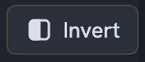
If you have specific words highlighted, it’ll invert only those words; if nothing is selected, it flips the entire display.
Your turn Invert the display, then put it back
Where their eyes go
Finally, let’s talk about the reading line— that sweet spot where the presenter’s eyes naturally rest.
By default, it starts about a third of the way down the screen, though some presenters prefer it a little higher and some like it lower.
You can adjust it under Reading line in the Prompter drawer using the up and down buttons, or just nudge it with F7 and F8.
Ask them where they like it during the walk-through— and once it’s set, leave it alone.
Your turn Move the reading line up and down, then put it back
When you’re ready, press for the next module.
Module 8
Cues and the clock
About 5-6 minutes
Now let’s look at a feature that got a massive upgrade in Cadence—let’s add a timer… Now we’ll look at cues. See how this works—it’s unique to Cadence.
Cues
A cue is a mark you drop into the script that’s just as much for the crew as it is for the presenter— a slide, a video, a sound effect, or a key moment in the room.
CUE - a plain cue for the crew
VIDEO - a clip, with its running time
SLIDE - a slide number
AUDIO - a sound
I can’t wait to show you how setting cues in the script allows everyone to see what’s coming up. You’ll have to wait a little longer— we’ll get to that in another module.
To add a cue, press the Custom key
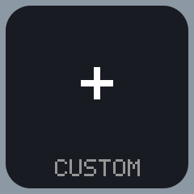
on your Stream Deck.
That opens up the Add cue dialog, where you can give your cue a name and a quick description.
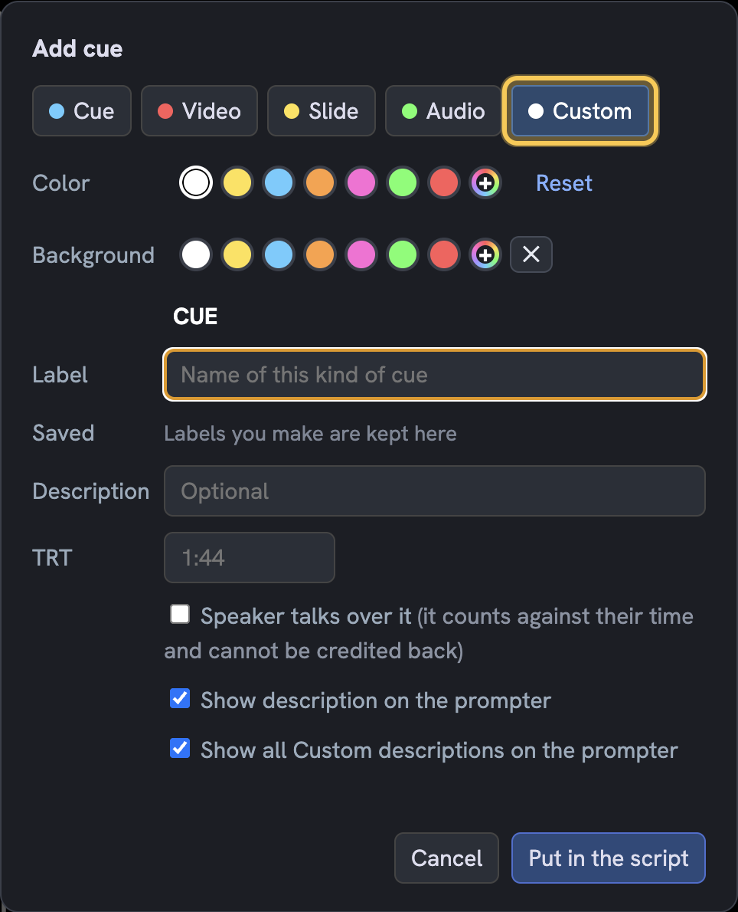
No Stream Deck?
Just hit the Add cue button on the bottom bar, or press ⌘⌥K (Ctrl+Alt+K).
Your turn Click after this line, add a custom cue called HELLO, and put it in
The clock
Notice those two cues at the very top of this module— the first one set a clock, and the second one started it.
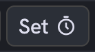
tells Cadence what time to set on the timer, and whether it counts up or down.
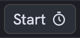
gets it rolling, and
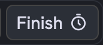
stops it.
That way, the presenter sees exactly how much time they have left—
and you see it right alongside them.
On your deck, the Timer key starts and pauses the clock, and the Count key flips it between counting down and counting up.
No deck? ⌘⌥T starts and pauses the clock.
Your turn Pause the clock, then start it again
Let it run itself
Best of all, you don’t even have to manage the clock manually.
The moment you press Play, your timer cues are armed— so as you scroll past an armed Start cue, the clock kicks off automatically, and when you pass an armed Finish cue, it stops.
Hit Pause, and they’re disarmed.
Just check the strip right above the editor—
it’ll always tell you whether your cues are Armed or Off.
Make it a habit to glance at that strip before every show.
Telling the crew
Sooner or later, someone on the crew is going to ask how much time is left— and now the clock gives you the exact answer.
Even better, Cadence can put those cues right in front of the crew so they don’t even have to ask, which we’ll cover in the third series.
We’re getting to the end, so let’s stop the timer.
Scroll past here… And it will stop.
Ready for what’s next?
Press for the next module.
Module 9
Before doors
About 2-3 minutes
The routine
By the time doors open, you want zero surprises.
The way you make that happen is a quick pre-show routine— exactly the same one, every single time.
Run through it in this order: script, display, test, backup.
The script
First, pull up the right script— double-check the title, and verify the date or version number.
Every presenter’s worst nightmare is walking up to the podium and realizing you don’t have their script or you’ve got an old draft.
The display
Check the prompter display for signal— Mirror and Flip if necessary.
The Show drawer has a checklist called “Before you go live.”
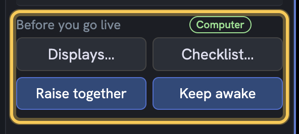
It turns off the pop-ups and notifications that must never cross the prompter, and keeps the display awake.
Your turn Open the Show drawer and find Before you go live
The test
Scroll a few lines at a normal speed.
Stop. Go back. Start.
Try the controls you will use.
A deck key, a dial, the mouse wheel.
The time to find a loose cable is now.
The backup
Keep a copy of the script that is not on your laptop.
Cadence also keeps backups, and Versions, so you can go back.
Know where the backup computer is, and how long it takes to switch.
The best operators are the ones who are over-prepared.
Press for the next module.
Module 10
When things go wrong
About 5-6 minutes
Stay calm
Sooner or later, something is going to go wrong—
it happens to everyone who runs live shows long enough.
In that moment, your job isn’t to fix everything; it’s simply to keep the presenter reading.
Nobody in the room remembers the glitch—
they only remember how smoothly it was handled.
The presenter goes off script
Presenters ad-lib.
They’ll skip an entire page, or jump straight to a completely different section.
Whatever you do, don’t chase them.
Stop right where you are and listen for a line you recognize.
Scan ahead in your editor—
remember, you can see a lot more of the script than they can on the glass—
and find either where they landed, or a clean spot where they can hop right back on script.
Click that line and press , and the prompter snaps straight to your cursor.
Your turn Click on a line in the next section and press Jump here
Bookmarks are a lifesaver here too, letting you jump straight to the next section by name.
Your turn Drop a bookmark with a button, a dial press or ⌘⌥M
The hardware drops
Now, what if a deck drops its connection, or a hand controller suddenly stops responding?
The prompter might keep rolling at whatever speed it was set to.
Don’t panic.
Grab your mouse wheel— or use two fingers on the trackpad— and speed control is instantly back in your hands.
The Speed buttons on the live bar work too.
If you need to stop fast, dial the speed straight to zero, or just hit Pause.
Mouse wheel, two fingers, buttons.
Say it to yourself right now so it’s muscle memory.
Your turn Press Play. Stop me with the mouse wheel. Then start me and stop me with the Speed buttons
The computer fails
The true worst-case scenario is the computer itself—
and the only real answer is a backup machine loaded with exactly the same script.
Know your switchover plan before doors open: who’s making the switch, which button switches to where, and how many seconds it takes.
Cadence also keeps automatic backups and saved versions of your scripts, so if you ever need to roll back, just head to File, then Versions….
When it still goes wrong
If you ever hit a snag with the software, click Mark That Moment
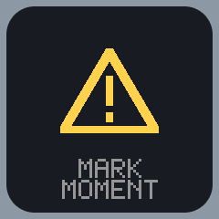
in the Help menu right as it happens.
That drops a timestamp so we can track down the exact cause later.
Once the show wraps, go to Help, then Report a Problem or Request a Feature…— that’s how Cadence keeps getting better.
What is next
You’ve got everything you need now.
Up next is Prep Like a Pro—getting a script ready in a fraction of the time.
You’ll find it under Help, then Learn: Prep Like a Pro.
Oh, and one last thing—you’ve been reading this off a teleprompter the entire time.
 to jump into the next module.
to jump into the next module.


 starts and pauses the clock, and the Count key
starts and pauses the clock, and the Count key  flips it between counting down and counting up.
flips it between counting down and counting up.